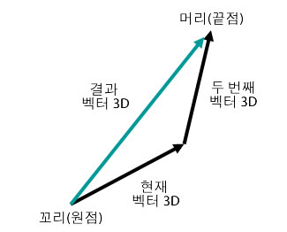
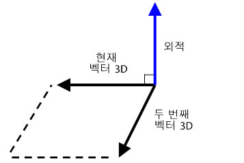

| 패키지 | flash.geom |
| 클래스 | public class Vector3D |
| 상속 | Vector3D |
| 언어 버전: | ActionScript 3.0 |
| 런타임 버전: | Flash Player 10, AIR 1.5 |
x 속성은 가로 축을, y 속성은 세로 축을 나타냅니다. 3차원 공간에서 z 속성은 깊이를 나타냅니다. 객체가 오른쪽으로 이동하면 x 속성의 값이 증가합니다. 객체가 아래쪽으로 이동하면 y 속성의 값이 증가합니다. 객체가 시점에서 멀어지면 z 속성의 값이 증가합니다. 원근 투영 및 크기 조절을 사용하면 화면에서 가까운 객체가 커보이고 먼 객체가 작아보입니다. 오른손잡이 3차원 좌표계의 경우와 같이 z축의 양수 방향이 관찰자에서 먼 쪽을 가리키고 객체가 관찰자의 눈에서 멀어지면 z 속성의 값이 증가합니다. 전역 공간의 원점인 (0,0,0)은 스테이지의 왼쪽 위 모서리입니다.

Vector3D 클래스는 (0,0,0)과 같은 좌표의 원점에서 끝점을 가리키는 화살표 방향을 나타낼 수도 있고, RGB(빨강, 녹색, 파랑) 색상 모델의 부동 소수점 구성 요소를 나타낼 수도 있습니다.
쿼터니언 표기법에서는 방향 정보를 추가로 제공하는 네 번째 요소인 w 속성을 도입합니다. 예를 들어 w 속성은 Vector3D 객체의 회전각을 정의할 수 있습니다. 회전각과 x, y 및 z 좌표를 조합하면 표시 객체의 방향을 결정할 수 있습니다. Vector3D 요소를 행렬 표기법으로 나타내면 다음과 같습니다.

관련 API 요소
 상속되는 공용 속성 숨기기
상속되는 공용 속성 숨기기 상속되는 공용 속성 표시
상속되는 공용 속성 표시| 속성 | 정의 주체 | ||
|---|---|---|---|
 | constructor : Object
지정된 객체 인스턴스의 클래스 객체 또는 생성자 함수에 대한 참조입니다. | Object | |
| length : Number [읽기 전용]
원점 (0,0,0)과 현재 Vector3D 객체의 x, y 및 z 좌표 사이의 길이(크기)입니다. | Vector3D | ||
| lengthSquared : Number [읽기 전용]
x, y 및 z 속성을 사용하여 계산한 현재 Vector3D 객체 길이의 제곱입니다. | Vector3D | ||
| w : Number
x, y 및 z 속성에 추가되는 Vector3D 객체의 네 번째 요소는 회전각 등의 데이터를 보유할 수 있습니다. | Vector3D | ||
| x : Number
3차원 공간에 있는 점의 x 좌표와 같은 Vector3D 객체의 첫 번째 요소입니다. | Vector3D | ||
| y : Number
3차원 공간에 있는 점의 y 좌표와 같은 Vector3D 객체의 두 번째 요소입니다. | Vector3D | ||
| z : Number
3차원 공간에 있는 점의 z 좌표와 같은 Vector3D 객체의 세 번째 요소입니다. | Vector3D | ||
| 메서드 | 정의 주체 | ||
|---|---|---|---|
Vector3D 객체의 인스턴스를 만듭니다. | Vector3D | ||
현재 Vector3D 객체의 x, y 및 z 요소 값을 다른 Vector3D 객체의 x, y 및 z 요소 값에 더합니다. | Vector3D | ||
[정적]
두 벡터 사이의 각을 라디안 단위로 반환합니다. | Vector3D | ||
현재 Vector3D 객체와 정확히 일치하는 복사본인 새 Vector3D 객체를 반환합니다. | Vector3D | ||
소스 Vector3D 객체의 모든 벡터 데이터를 호출 Vector3D 객체에 복사합니다. | Vector3D | ||
현재 Vector3D 및 다른 Vector3D 객체와 수직(직각)인 새 Vector3D 객체를 반환합니다. | Vector3D | ||
현재 Vector3D 객체의 x, y 및 z 요소 값을 지정된 Vector3D 객체의 x, y 및 z 요소 값만큼 감소시킵니다. | Vector3D | ||
[정적]
두 Vector3D 객체 사이의 거리를 반환합니다. | Vector3D | ||
현재 Vector3D 객체와 매개 변수로 지정된 객체가 단위 벡터이면 이 메서드는 두 벡터 사이 각의 코사인을 반환합니다. | Vector3D | ||
현재 Vector3D 객체의 x, y 및 z 요소를 지정된 Vector3D 객체와 비교하여 두 Vector3D 객체가 서로 같은지 확인합니다. | Vector3D | ||
|
지정된 속성이 객체에 정의되어 있는지 여부를 나타냅니다. | Object | |
현재 Vector3D 객체의 x, y 및 z 요소 값을 지정된 Vector3D 객체의 x, y 및 z 요소 값만큼 증가시킵니다. | Vector3D | ||
|
Object 클래스의 인스턴스가 매개 변수로 지정된 객체의 프로토타입 체인에 있는지 여부를 나타냅니다. | Object | |
현재 Vector3D 객체의 요소를 지정된 Vector3D 객체의 요소와 비교하여 서로 거의 같은지 확인합니다. | Vector3D | ||
현재 Vector3D 객체를 역수로 설정합니다. | Vector3D | ||
처음 세 요소(x, y, z)를 벡터의 길이로 나누어 Vector3D 객체를 단위 벡터로 변환합니다. | Vector3D | ||
현재 Vector3D 객체의 x, y 및 z 속성 값을 w 속성 값으로 나눕니다. | Vector3D | ||
|
지정된 속성이 존재하고 열거 가능한지 여부를 나타냅니다. | Object | |
현재 Vector3D 객체의 크기를 스칼라 값만큼 조절합니다. | Vector3D | ||
|
루프 작업에서 동적 속성을 사용할 수 있는지 여부를 설정합니다. | Object | |
Vector3D의 멤버를 지정된 값으로 설정합니다.
| Vector3D | ||
현재 Vector3D 객체의 x, y 및 z 요소 값을 다른 Vector3D 객체의 x, y 및 z 요소 값에서 뺍니다. | Vector3D | ||
|
로캘별 규칙에 따라 서식이 지정된 이 객체의 문자열 표현을 반환합니다. | Object | |
현재 Vector3D 객체의 문자열 표현을 반환합니다. | Vector3D | ||
|
지정된 객체의 프리미티브 값을 반환합니다. | Object | |
| 상수 | 정의 주체 | ||
|---|---|---|---|
| X_AXIS : Vector3D [정적]
좌표가 (1,0,0)인 Vector3D 객체로 정의되는 x축입니다. | Vector3D | ||
| Y_AXIS : Vector3D [정적]
좌표가 (0,1,0)인 Vector3D 객체로 정의되는 y축입니다. | Vector3D | ||
| Z_AXIS : Vector3D [정적]
좌표가 (0,0,1)인 Vector3D 객체로 정의되는 z축입니다. | Vector3D | ||
length | 속성 |
lengthSquared | 속성 |
w | 속성 |
public var w:Number| 언어 버전: | ActionScript 3.0 |
| 런타임 버전: | Flash Player 10, AIR 1.5 |
x, y 및 z 속성에 추가되는 Vector3D 객체의 네 번째 요소는 회전각 등의 데이터를 보유할 수 있습니다. 기본값은 0입니다.
쿼터니언 표기법에서는 각을 네 번째 요소로 사용하여 3차원 회전을 계산합니다. w 속성을 사용하여 Vector3D 객체의 회전각을 정의할 수 있습니다. 회전각과 좌표(x,y,z)를 결합하여 표시 객체의 방향을 결정할 수 있습니다.
또한 w 속성을 투영된 3차원 객체의 원근 비틀기 인수로 사용할 수도 있고, 2차원 공간으로 투영된 3차원 좌표를 나타낼 때 투영 변형 값으로 사용할 수도 있습니다. 예를 들어 Matrix3D.rawData 속성을 통해 투영 행렬을 만들어 Vector3D 객체에 적용하면 Vector3D 객체의 네 번째 요소(w 속성)에 변형 값이 만들어집니다. 그런 다음 Vector3D 객체의 다른 요소를 변형 값으로 나누면 투영된 Vector3D 객체가 만들어집니다. Vector3D.project() 메서드를 사용하면 Vector3D 객체의 처음 세 요소를 네 번째 요소로 나눌 수 있습니다.
관련 API 요소
x | 속성 |
public var x:Number| 언어 버전: | ActionScript 3.0 |
| 런타임 버전: | Flash Player 10, AIR 1.5 |
3차원 공간에 있는 점의 x 좌표와 같은 Vector3D 객체의 첫 번째 요소입니다. 기본값은 0입니다.
y | 속성 |
public var y:Number| 언어 버전: | ActionScript 3.0 |
| 런타임 버전: | Flash Player 10, AIR 1.5 |
3차원 공간에 있는 점의 y 좌표와 같은 Vector3D 객체의 두 번째 요소입니다. 기본값은 0입니다.
z | 속성 |
public var z:Number| 언어 버전: | ActionScript 3.0 |
| 런타임 버전: | Flash Player 10, AIR 1.5 |
3차원 공간에 있는 점의 z 좌표와 같은 Vector3D 객체의 세 번째 요소입니다. 기본값은 0입니다.
Vector3D | () | 생성자 |
public function Vector3D(x:Number = 0., y:Number = 0., z:Number = 0., w:Number = 0.)| 언어 버전: | ActionScript 3.0 |
| 런타임 버전: | Flash Player 10, AIR 1.5 |
Vector3D 객체의 인스턴스를 만듭니다. 생성자에 매개 변수를 지정하지 않으면 (0,0,0,0) 요소를 사용하여 Vector3D 객체를 만듭니다.
매개 변수x:Number (default = 0.) | |
y:Number (default = 0.) | |
z:Number (default = 0.) | |
w:Number (default = 0.) |
add | () | 메서드 |
public function add(a:Vector3D):Vector3D| 언어 버전: | ActionScript 3.0 |
| 런타임 버전: | Flash Player 10, AIR 1.5 |
현재 Vector3D 객체의 x, y 및 z 요소 값을 다른 Vector3D 객체의 x, y 및 z 요소 값에 더합니다. add() 메서드는 현재 Vector3D 객체를 변경하지 않습니다. 대신 새 값을 갖는 새 Vector3D 객체를 반환합니다.
결과 벡터는 두 벡터를 더한 것입니다. 첫 번째 벡터의 원점(꼬리)에서 두 번째 벡터의 끝점(머리)으로 벡터를 그려 보면 결과를 시각적으로 이해할 수 있습니다. 결과 벡터는 첫 번째 벡터의 원점과 두 번째 벡터의 끝점 사이의 거리입니다.

매개 변수
a:Vector3D — 현재 Vector3D 객체에 더할 Vector3D 객체입니다.
|
Vector3D — 현재 Vector3D 객체를 다른 Vector3D 객체에 더한 결과인 Vector3D 객체입니다.
|
관련 API 요소
angleBetween | () | 메서드 |
public static function angleBetween(a:Vector3D, b:Vector3D):Number| 언어 버전: | ActionScript 3.0 |
| 런타임 버전: | Flash Player 10, AIR 1.5 |
두 벡터 사이의 각을 라디안 단위로 반환합니다. 반환된 각은 첫 번째 Vector3D 객체가 두 번째 Vector3D 객체와 평행이 되도록 회전해야 하는 최소 라디안입니다.
angleBetween() 메서드는 정적 메서드입니다. 이 메서드를 Vector3D 클래스의 메서드로 직접 사용할 수 있습니다.
각도를 라디안으로 변환하려면 다음 공식을 사용합니다.
radian = Math.PI/180 * degree
매개 변수
a:Vector3D — 첫 번째 Vector3D 객체입니다.
| |
b:Vector3D — 두 번째 Vector3D 객체입니다.
|
Number — 두 Vector3D 객체 사이의 각입니다.
|
clone | () | 메서드 |
copyFrom | () | 메서드 |
crossProduct | () | 메서드 |
public function crossProduct(a:Vector3D):Vector3D| 언어 버전: | ActionScript 3.0 |
| 런타임 버전: | Flash Player 10, AIR 1.5 |
현재 Vector3D 및 다른 Vector3D 객체와 수직(직각)인 새 Vector3D 객체를 반환합니다. 반환된 Vector3D 객체의 좌표가 (0,0,0)이면 두 Vector3D 객체가 서로 평행인 것입니다.

다각형 표면에 있는 두 벡터의 정규화된 외적과 카메라 또는 눈의 시점에서 정규화된 벡터를 사용하여 내적을 구할 수 있습니다. 이 내적 값을 통해 3차원 객체의 표면이 시점에서 숨겨지는지 여부를 확인할 수 있습니다.
매개 변수
a:Vector3D — 두 번째 Vector3D 객체입니다.
|
Vector3D — 현재 Vector3D 객체 및 매개 변수로 지정된 Vector3D 객체와 수직인 새 Vector3D 객체입니다.
|
관련 API 요소
decrementBy | () | 메서드 |
public function decrementBy(a:Vector3D):void| 언어 버전: | ActionScript 3.0 |
| 런타임 버전: | Flash Player 10, AIR 1.5 |
현재 Vector3D 객체의 x, y 및 z 요소 값을 지정된 Vector3D 객체의 x, y 및 z 요소 값만큼 감소시킵니다. Vector3D.subtract() 메서드와 달리 decrementBy() 메서드는 현재 Vector3D 객체의 값을 변경하며 새 Vector3D 객체를 반환하지 않습니다.
매개 변수
a:Vector3D — 현재 Vector3D 객체에서 뺄 값이 들어 있는 Vector3D 객체입니다.
|
관련 API 요소
distance | () | 메서드 |
public static function distance(pt1:Vector3D, pt2:Vector3D):Number| 언어 버전: | ActionScript 3.0 |
| 런타임 버전: | Flash Player 10, AIR 1.5 |
두 Vector3D 객체 사이의 거리를 반환합니다. distance() 메서드는 정적 메서드입니다. 이 메서드를 Vector3D 클래스의 메서드로 사용하여 두 3차원 점 사이의 유클리드 거리를 구할 수 있습니다.
매개 변수
pt1:Vector3D — 첫 번째 3차원 점인 Vector3D 객체입니다.
| |
pt2:Vector3D — 두 번째 3차원 점인 Vector3D 객체입니다.
|
Number — 두 Vector3D 객체 사이의 거리입니다.
|
dotProduct | () | 메서드 |
public function dotProduct(a:Vector3D):Number| 언어 버전: | ActionScript 3.0 |
| 런타임 버전: | Flash Player 10, AIR 1.5 |
현재 Vector3D 객체와 매개 변수로 지정된 객체가 단위 벡터이면 이 메서드는 두 벡터 사이 각의 코사인을 반환합니다. 단위 벡터는 같은 방향을 가리키며 길이가 1인 벡터입니다. 단위 벡터를 사용하면 벡터의 길이가 결과에 고려되지 않습니다. normalize() 메서드를 사용하면 벡터를 단위 벡터로 변환할 수 있습니다.
dotProduct() 메서드는 두 벡터 사이의 각을 구합니다. 이 메서드는 백페이스 컬링 또는 조명 계산에도 사용됩니다. 백페이스 컬링은 시점에서 숨겨지는 표면을 확인하는 절차입니다. 카메라 또는 눈의 시점에서 정규화된 벡터와 다각형 표면에 있는 여러 벡터의 외적을 사용하여 내적을 구할 수 있습니다. 이 내적이 0보다 작으면 표면이 카메라 또는 관찰자를 향하고 있는 것입니다. 두 단위 벡터가 서로 수직이면 벡터가 직교하므로 내적이 0입니다. 두 벡터가 서로 평행하면 내적이 1입니다.
매개 변수
a:Vector3D — 두 번째 Vector3D 객체입니다.
|
Number — 현재 Vector3D 객체와 지정된 Vector3D 객체의 내적을 나타내는 스칼라 값입니다.
|
관련 API 요소
equals | () | 메서드 |
public function equals(toCompare:Vector3D, allFour:Boolean = false):Boolean| 언어 버전: | ActionScript 3.0 |
| 런타임 버전: | Flash Player 10, AIR 1.5 |
현재 Vector3D 객체의 x, y 및 z 요소를 지정된 Vector3D 객체와 비교하여 두 Vector3D 객체가 서로 같은지 확인합니다. 이러한 요소의 값이 동일하면 두 Vector3D 객체가 서로 같은 것입니다. 두 번째 선택적 매개 변수를 true로 설정하면 w 속성을 포함한 Vector3D 객체의 4개 요소가 모두 비교됩니다.
매개 변수
toCompare:Vector3D — 현재 Vector3D 객체와 비교할 Vector3D 객체입니다.
| |
allFour:Boolean (default = false)w 속성이 비교에 사용되는지 여부를 지정하는 선택적 매개 변수입니다.
|
Boolean — 지정된 Vector3D 객체가 현재 Vector3D 객체와 같으면 true 값이고, 그렇지 않으면 false입니다.
|
관련 API 요소
incrementBy | () | 메서드 |
public function incrementBy(a:Vector3D):void| 언어 버전: | ActionScript 3.0 |
| 런타임 버전: | Flash Player 10, AIR 1.5 |
현재 Vector3D 객체의 x, y 및 z 요소 값을 지정된 Vector3D 객체의 x, y 및 z 요소 값만큼 증가시킵니다. Vector3D.add() 메서드와 달리 incrementBy() 메서드는 현재 Vector3D 객체의 값을 변경하며 새 Vector3D 객체를 반환하지 않습니다.
매개 변수
a:Vector3D — 현재 Vector3D 객체에 더할 Vector3D 객체입니다.
|
관련 API 요소
nearEquals | () | 메서드 |
public function nearEquals(toCompare:Vector3D, tolerance:Number, allFour:Boolean = false):Boolean| 언어 버전: | ActionScript 3.0 |
| 런타임 버전: | Flash Player 10, AIR 1.5 |
현재 Vector3D 객체의 요소를 지정된 Vector3D 객체의 요소와 비교하여 서로 거의 같은지 확인합니다. 두 벡터의 모든 요소 값이 같거나 비교 결과가 허용치 범위 안에 있으면 두 Vector3D 객체가 서로 거의 같습니다. 두 요소의 차이는 tolerance 매개 변수로 지정된 숫자보다 작아야 합니다. 세 번째 선택적 매개 변수를 true로 설정하면 w 속성을 포함한 Vector3D 객체의 4개 요소가 모두 비교됩니다. 그렇지 않으면 x, y 및 z 요소만 비교됩니다.
매개 변수
toCompare:Vector3D — 현재 Vector3D 객체와 비교할 Vector3D 객체입니다.
| |
tolerance:Number — 허용치 인수를 결정하는 숫자입니다. toCompare 매개 변수에 지정된 Vector3D 요소의 값과 현재 Vector3D 요소의 차이가 허용치 숫자보다 작으면 두 값이 거의 같은 것으로 간주됩니다.
| |
allFour:Boolean (default = false)w 속성이 비교에 사용되는지 여부를 지정하는 선택적 매개 변수입니다.
|
Boolean — 지정된 Vector3D 객체가 현재 Vector3D 객체와 거의 같으면 true 값이고, 그렇지 않으면 false입니다.
|
관련 API 요소
negate | () | 메서드 |
public function negate():void| 언어 버전: | ActionScript 3.0 |
| 런타임 버전: | Flash Player 10, AIR 1.5 |
현재 Vector3D 객체를 역수로 설정합니다. 역수 객체는 원본 객체와 반대 방향입니다. 현재 Vector3D 객체의 x, y 및 z 속성이 -x, -y 및 -z로 변경됩니다.
normalize | () | 메서드 |
project | () | 메서드 |
public function project():void| 언어 버전: | ActionScript 3.0 |
| 런타임 버전: | Flash Player 10, AIR 1.5 |
현재 Vector3D 객체의 x, y 및 z 속성 값을 w 속성 값으로 나눕니다.
현재 Vector3D 객체가 Vector3D 객체에 투영 Matrix3D 객체를 곱한 결과인 경우 w 속성은 변형 값을 보유할 수 있습니다. 이러한 경우 project() 메서드를 사용하여 요소를 w 속성으로 나누면 투영을 완료할 수 있습니다. 투영 Matrix3D 객체를 만들려면 Matrix3D.rawData 속성을 사용합니다.
scaleBy | () | 메서드 |
public function scaleBy(s:Number):void| 언어 버전: | ActionScript 3.0 |
| 런타임 버전: | Flash Player 10, AIR 1.5 |
현재 Vector3D 객체의 크기를 스칼라 값만큼 조절합니다. 매개 변수에 지정된 스칼라 숫자를 Vector3D 객체의 x, y 및 z 요소에 곱합니다. 예를 들어 벡터의 크기를 10만큼 조절하면 벡터가 10배 길어집니다. 스칼라 값으로 벡터의 방향을 변경할 수도 있습니다. 벡터에 음수를 곱하면 방향이 반전됩니다.
매개 변수
s:Number — Vector3D 객체의 크기를 조절하는 데 사용되는 승수(스칼라 값)입니다.
|
setTo | () | 메서드 |
subtract | () | 메서드 |
public function subtract(a:Vector3D):Vector3D| 언어 버전: | ActionScript 3.0 |
| 런타임 버전: | Flash Player 10, AIR 1.5 |
현재 Vector3D 객체의 x, y 및 z 요소 값을 다른 Vector3D 객체의 x, y 및 z 요소 값에서 뺍니다. subtract() 메서드는 현재 Vector3D 객체를 변경하지 않습니다. 대신 새 값을 갖는 새 Vector3D 객체를 반환합니다.
매개 변수
a:Vector3D — 현재 Vector3D 객체에서 뺄 Vector3D 객체입니다.
|
Vector3D — 현재 Vector3D와 지정된 Vector3D 객체 사이의 차이인 새 Vector3D 객체입니다.
|
관련 API 요소
toString | () | 메서드 |
X_AXIS | 상수 |
public static const X_AXIS:Vector3D| 언어 버전: | ActionScript 3.0 |
| 런타임 버전: | Flash Player 10, AIR 1.5 |
좌표가 (1,0,0)인 Vector3D 객체로 정의되는 x축입니다.
Y_AXIS | 상수 |
public static const Y_AXIS:Vector3D| 언어 버전: | ActionScript 3.0 |
| 런타임 버전: | Flash Player 10, AIR 1.5 |
좌표가 (0,1,0)인 Vector3D 객체로 정의되는 y축입니다.
Z_AXIS | 상수 |
public static const Z_AXIS:Vector3D| 언어 버전: | ActionScript 3.0 |
| 런타임 버전: | Flash Player 10, AIR 1.5 |
좌표가 (0,0,1)인 Vector3D 객체로 정의되는 z축입니다.
Tue Jun 12 2018, 03:17 PM Z